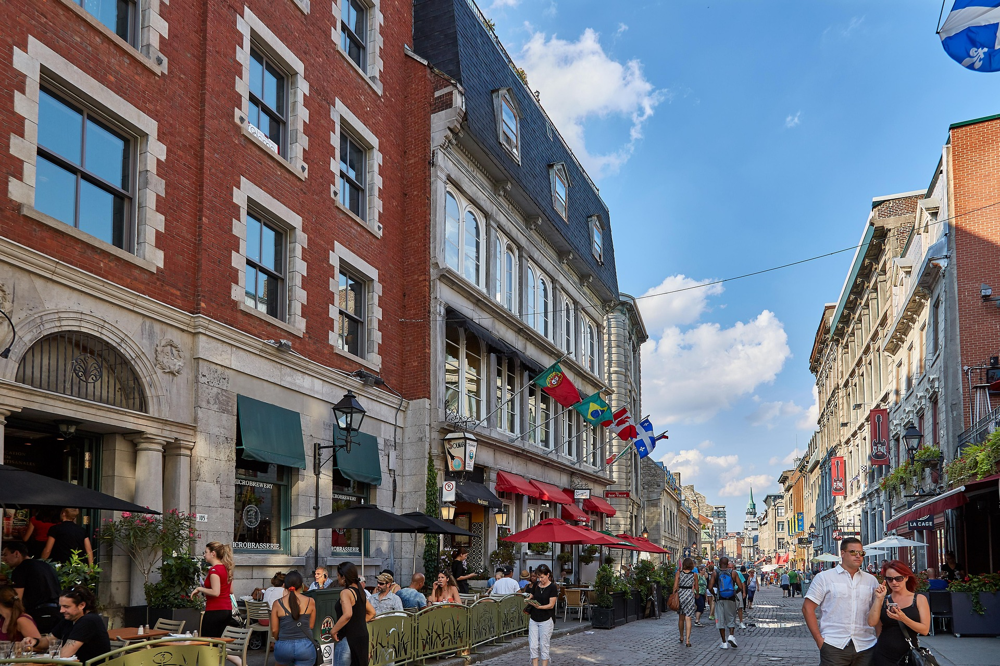
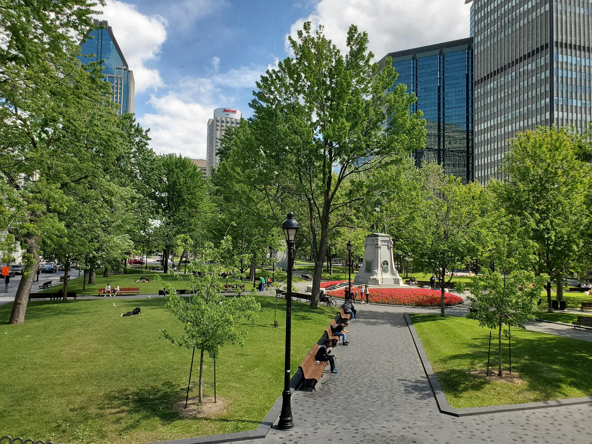

Le secteur est reconnu pour sa vie de quartier, sa proximité avec plusieurs établissements d'enseignement et son accès rapide aux transports en commun.
Pour un étudiant, c'est un environnement particulièrement pratique. Les déplacements sont simples, les services sont nombreux et le quartier permet de profiter pleinement de Montréal sans dépendre d'une voiture.
Cafés, épiceries, restaurants, pharmacies, parcs — tout ce dont vous avez besoin au quotidien est à quelques minutes à pied. Vivre au centre-ville de Montréal, c'est gagner du temps chaque jour.
Planifier une visite
Situés au 1935 Rue Tupper au centre-ville de Montréal, nos appartements sont à distance de marche du métro Atwater et Georges-Vanier, et à quelques minutes des campus de Concordia, Dawson, LaSalle et McGill.